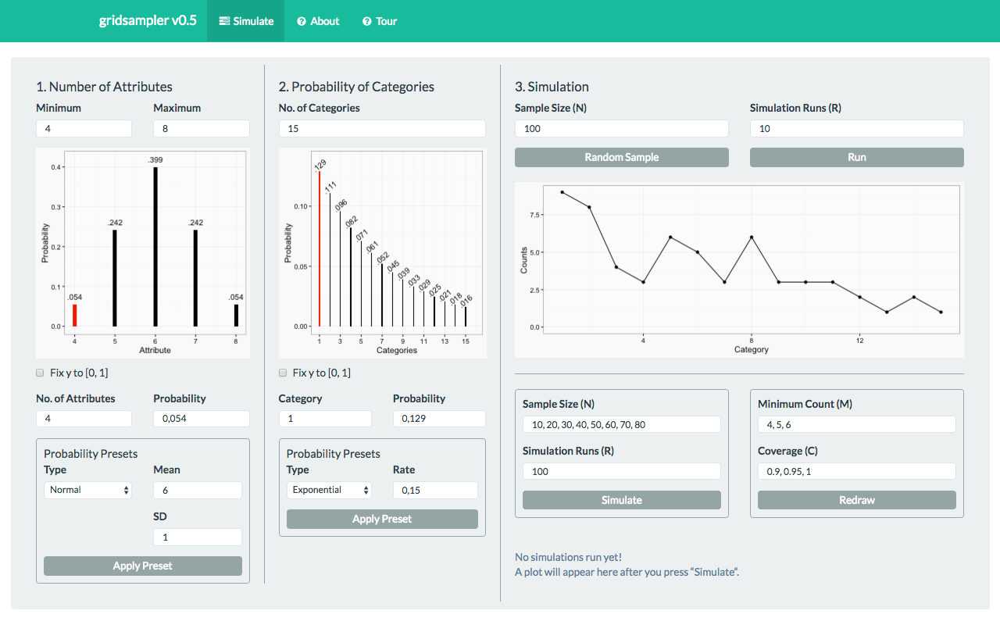
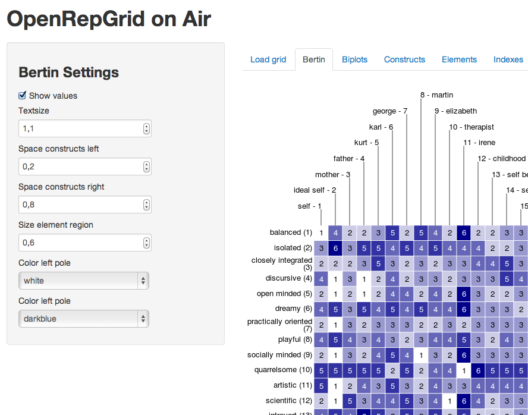
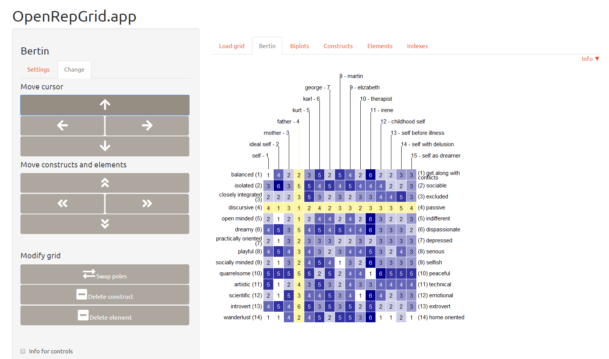

gridsampler

gridsampler is a simulation tool to determine the required sample size for repertory grid studies. It is part of the OpenRepGrid collection.
OpenRepGrid on air

OpenRepGrid on air is a tool to analyze repertory grid data. It is part of the OpenRepGrid collection.
OpenRepGrid.app

OpenRepGrid.app is the successor of OpenRepGrid onair, a tool to analyze repertory grid data. It is part of the OpenRepGrid collection.
Other Shiny apps
- packages - Simply lists the packages installed on the shiny server to check if something goes wrong.